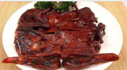
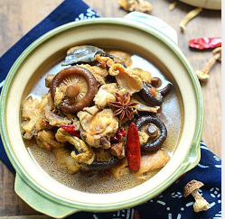

| 介绍 | 本人照片 |
| 姓名：王诗人 班级：通信1903班 学号：201916180304 湖南常德人 |
| 疫情期间常德美食 | 鸭霸王 | 鸡炖蘑菇 | 面条 |
|

常德酱板鸭，湖南省 常德市武陵区特产， 中国国家地理标志产品。 酱板鸭是常德富有浓 郁地方特色的风味美 食，它以其独特口味 “香、辣、鲜、醇”， 观之红光油亮、闻之酱 香浓郁、尝之香辣爽口， 且脂肪含量低，蛋白质含 量高，享有“常德一绝” 的美誉。 常德酱板鸭 |

鸡炖蘑菇,鸡肉鲜 嫩，芳香可口，营 养价值更高，常吃 蘑菇可增强机体免疫力， 防止过早衰老， 有强身健体等功效。 鸡炖蘑菇含钙、磷、 铁、蛋白质、胡萝卜素、 维生素C等营养成份， 经常食用可预防视力减退， 夜盲症，皮肤干燥； 并增强对呼吸、消化道 传染病的抵抗力。 这道菜自古以来就是菜中上品， 营养和味道上都堪称绝配 |
面条都知道就不细说了 |